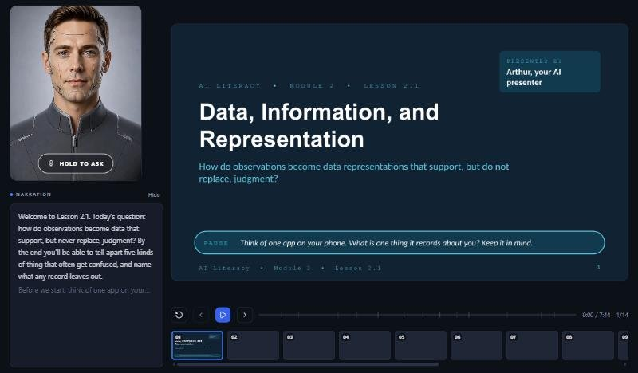

AI Literacy • Module 2 • Lesson 2.1 Reading
Data, Information, and Representation
Reading before the lesson activity

Prefer to hear it first? Let Arthur walk you through it.
Arthur, the course AI presenter, talks through this lesson in about eight minutes with 14 slides. Hold the microphone button while it plays to ask him a question. Then come back here for the reading and the activities.
- 7 min 33 s
- 14 slides
- Ask questions as it plays
- Opens in a new tab
Begin with a prediction. A school app records a student’s arrival time, course schedule, quiz responses, and a teacher note. Which items are observations, labels, categories, claims, or decisions?
Data are representations, not reality itself
Data are recorded representations of something: a number, word, image, sound sample, location, click, measurement, or category. Data can be useful, but it is never the whole thing being represented. A temperature value records one property at one moment. A photo records a view from one angle under particular lighting. A student profile does not contain a student’s full life.
When a system uses data, it operates on the representation it has—not directly on the world in all its complexity. Good AI literacy therefore asks what was recorded, how it was recorded, what was left out, and how a label or category was chosen.
Observation, label, category, claim, decision
| Term | Meaning | Example |
|---|---|---|
| Observation | A recorded fact or measurement. | “The sensor measured 72°F at 9:00 a.m.” |
| Label | A tag attached to an observation for a purpose. | “spam” on an email example. |
| Category | A group defined by a rule or convention. | “late arrival” for arrivals after 8:00. |
| Claim | A statement that interprets evidence. | “The student may need transportation support.” |
| Decision | An action selected using information and judgment. | “Contact the family” or “do not act yet.” |
These are not interchangeable. A label can be mistaken; a category can be designed differently; a claim may need additional evidence; and a decision should include human responsibility.
Representations make patterns visible—and hide some details
Computers represent images as numbers, text as tokens or codes, sound as sampled signals, and choices as values or categories. Representation makes comparison possible. A model can compare thousands of image measurements or word patterns faster than a person. But representation also creates limits. If a camera has poor lighting, if a form lacks a needed option, or if a dataset omits a group, the model cannot recover the missing context by itself.
Key vocabulary
- data: recorded representations used for analysis or computation.
- representation: a form used to stand for an object, event, property, or idea.
- label: a tag assigned to an example for a purpose.
- feature: a measurable or encoded property used by a model.
- proxy: a measurable stand-in for something harder to measure directly.
As you move to the lesson
Choose one familiar app or school process. Be ready to name one observation it might collect, one label it might apply, and one human decision that should not be confused with either.